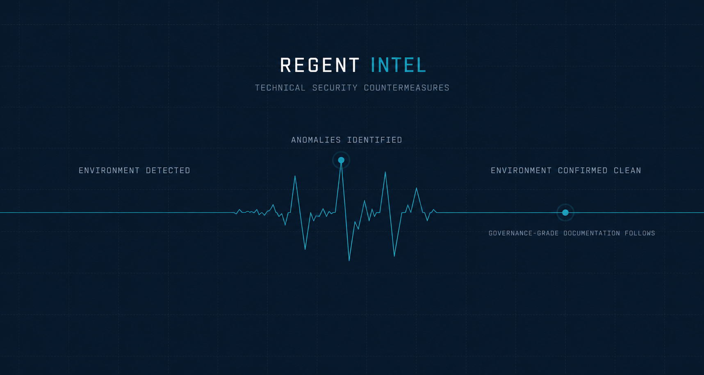

Boardrooms, residences, vehicles, and devices get compromised quietly. Our technical surveillance countermeasures sweeps combine RF spectrum analysis, physical inspection, and device forensics to confirm a space is actually clean, not just assumed clean. Actionable, governance-grade documentation. Continuous monitoring (24/7) available.
The TSCM program is delivered as a structured, governed capability — not an episodic service call. Every engagement is authorized, scoped, executed to documented standard, and followed by findings suitable for executive review, legal scrutiny, and governance oversight.

Full-range radio frequency sweeps to detect active and dormant transmitting devices across a space. Bluetooth, Wi-Fi, and wideband RF monitoring across all relevant bands.
Hands-on inspection of fixtures, furniture, and infrastructure for devices that do not transmit and will not show on a scanner. Borescope, optical lens detection, and tamper analysis.
Examination of phones, laptops, and network hardware for compromise, malware, or unauthorized monitoring software. Chain-of-custody documentation for legal use.
Sweeps extended to all mobile environments. Each platform is assessed independently — vehicle, aircraft, and vessel environments each carry distinct concealment and access risks.
Program aligns with ISO/IEC 27001 and ISO 27035 principles for information security management and incident response.
All inquiries are handled with complete confidentiality.